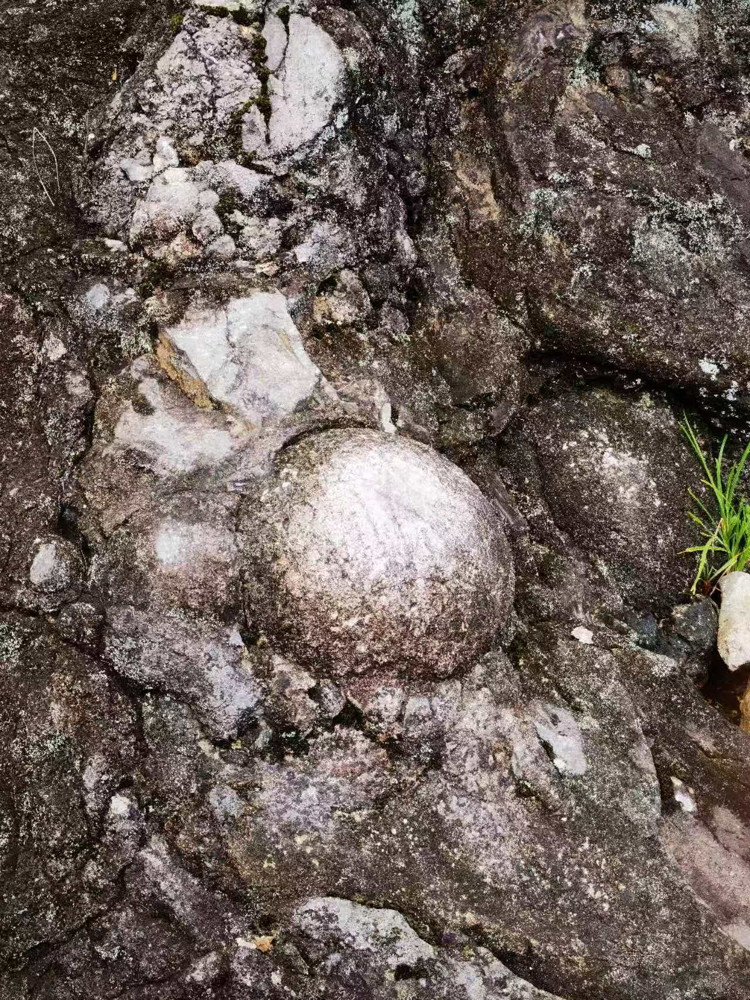
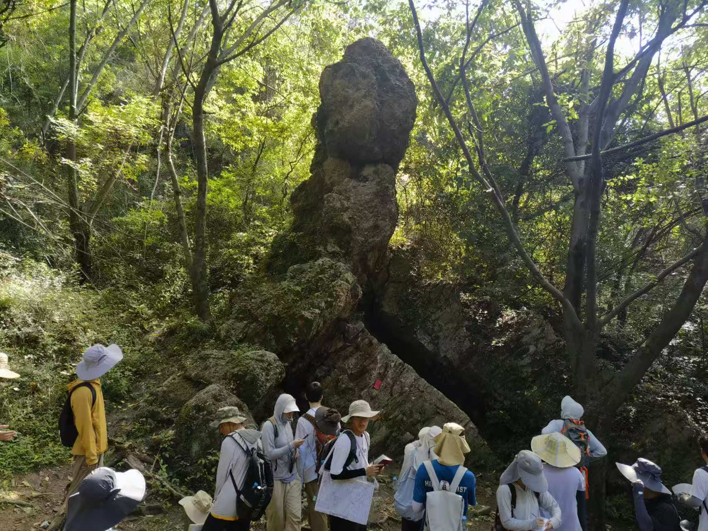

Student Research Training Program2024.9 - 2025.2 The origin of water-ice in the lunar regolith：Constraints from lunar meteorites
Supervisor： Prof. Jia Liu
- The origin of lunar regolith water is unclear： Solar Wind, Meteorites, Cosmic Dust, Molecular Clouds?
- To constrain the origin of H20 in lunar regolith
- Focus on Hydrogen isotope in alteration minerals
- Done the basic mineral identification by microscope and SEM
- Determing the isotope composition by SIMS
Research AsistantPresent
Supervisor： Prof. Jia Liu
- Determing the content of H20 in IODP & OIB Samples by FTIR
- Determing the trace element in minerals by EPMA
AWARDS
- National Second Prize of National College Students' geological skills competition Fall 2024
- Provincial Third Prize of Zhejiang Province College Students' Advanced Mathematics Competition Summer 2024
- Scholarship of Zhejiang Province government Fall 2024
- Outstanding Student of ZJU Fall 2023
- First prize Scholarship of ZJU Fall 2024
- Third prize Scholarship of ZJU Fall 2023
INTERNSHIP
Field Trip For Physical Geology in Zhejiang Province Summer 2023

Typical Lithophysa Structure
Geological Mapping Field Trip in the southern of Tanlu fault zone Summer 2024

Reverse Fault
National College Students' geological skills competition Fall 2024